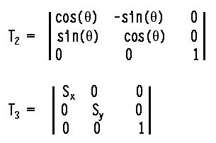
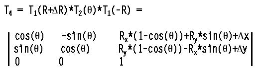
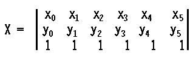
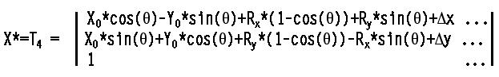

x in the x-direction, and y in the y-direction, can be performed by the matrix T1:
x in the x-direction, and y in the y-direction, can be performed by the matrix T1:C/C++ Users Journal August, 2004
Matrices are often used to compute coordinate transformations due to image rotations in graphics applications [1] and for simulating rigid body movement in physics and engineering problems. For example, you can use X=A*X, where X is a matrix of column vectors that specify the locations of features in an image and where A is a matrix that transforms X as a function of a rotation angle. My application requires coordinate translations as well as rotations, both of which can be performed in a single mathematical operation by a special class of matrices called "affine matrices." I also need to operate on the individual columns of the data matrix, so it would be convenient to access the columns of X as references to vectors.
It occurred to me that it would be more efficient to perform X*=A instead of X=A*X, but I soon realized that matrix classes [2] that provide X=A*X require the creation of a temporary matrix, whose value is returned by the operator * and a second operation to copy this value into X. The temporary matrix is necessary, and forces the return of the transformed matrix by value instead of by reference because the elements in each column of X must be held constant until all of the elements in the corresponding column of its returned version have been computed.
C++ classes usually implement a matrix as a single array or vector, or, in some cases, as a single vector of vectors. By including two such containers instead of one, and a pointer to designate the one that's currently in use, you should be able to use the idle one in place of a temporary matrix, and to switch the pointer before returning from the operator. In this manner, an efficient operator for X*=A could be implemented without creating a temporary matrix and without having to copy the value into X at the end of the operator—both of which would save execution time.
When a matrix is implemented as an array or vector, an index must be computed to access an element by its row and column indices. For example, when a matrix is constructed by rows, matrix(r,c) = array[r*row_length + c], where r and c are the row and column indices. In the binary operation A*X, every element in X, A, and the transformed value of X must be accessed, which requires the computation of array indices for twice the number of elements in X plus the number of elements in A.
Mathematically, the value of each element X(r,c) in the transformed data matrix is computed by taking the scalar product of the rth row of A and the cth column of X. The design of a function that computes the scalar product of two vectors efficiently is a no-brainer when the inputs are references to vectors (see VEC.h). It seemed reasonable, therefore, to create a transformation matrix class, implemented as a vector of row vectors, and a data matrix class, implemented as a vector of column vectors. The former would enable access to rows by reference while the latter would provide access to columns by reference. Note also that the product of two matrices would no longer require a computation to get each array index.
To implement the *= operator, the data matrix would need two vector-of-vectors members. Since a transformation matrix is often the product of other transformations, this class could also exploit the use of two vector-of-vectors members. Affine matrices have special constraints on most of their algebraic operations, so two more classes would be needed. In this article, I examine these four matrix classes.
The displacement of a vector by x in the x-direction, and y in the y-direction, can be performed by the matrix T1:
Rotation (T2) and scaling (T3) can be obtained with the following matrices:
The 1 at the bottom of the X vector and the 0s and 1 in the bottom row of the transformation matrices are characteristics of affine vectors and matrices. The 1 at the bottom of X enables translation to be implemented as a matrix product operator and must not be changed as a result of any algebraic operation. The bottom row in T1 preserves the 1s at the bottom of the transformed value of X.
My current project, called "Critter," involves the motion of creatures through a viscous fluid in a two-dimensional virtual universe. Figure 1 shows Critter at two instants in virtual time. The locations of its features are specified by six vectors, of which one (F) to the extremity of its right antenna is shown in the figure. Critter's universe includes other instances of Critter, stationary and moveable obstacles, and a boundary—all of which are objects for detection or collision. It's necessary, therefore, to periodically compute the distances between Critter's features and those of potential obstacles. This is where the transformation X*=A, comes in. X is a matrix of Critter feature coordinates and A is a matrix that transforms X as a function of the displacement of Critter's body vector (R in Figure 1) and the rotation about an axis through the end of that vector.
If Critter's lateral and angular velocities are known at t0, its displacement and change in rotational angle t seconds later can be computed. To use these data for computing new coordinates for all six of its features, you need to perform the following transformations on each of them in the following order:
t and Critter's angular speed at t0.R, to the previous body vector.R, where R is the product of t and his lateral velocity at t0, and has the components x and y. The beauty of using affine matrices is that these four transformations can be performed on all six features with a single operation, X*=T4, where:
and X is an affine matrix composed of Critter's six feature vectors:
Applying the *= operator to X by T4 yields,
where only the first column is shown in the transformed value of X on the right, due to page width constraints.
The four (template) classes inherit the following members from the base class in MatBase.h (Listing 1):
size_t dim1; size_t dim2; vector<vector<T> > dat0; vector<vector<T> > dat1; vector<vector<T> >* curDatP;
In the case of column matrices, dat0 and dat1 are vectors of column vectors, where dim1 is the number of column vectors and dim2 is the length of each column (that is, the number of rows). For row matrices, dat0 and dat1 are vectors of row vectors, where dim1 is the number of rows and dim2 is the row length. The constructors are protected to limit MatBase<T> to use as a base class.
ColMat<T,L> and RowMat<T,L> are defined in ColMat.h and RowMat.h, respectively, both available at http://www.cuj.com/code/. As usual, the template parameter, T, determines the class of objects that comprise the matrix. The second parameter, L, serves two purposes—it specifies the length of a column in a ColMat matrix and the length of a row in a RowMat matrix; and its presence means that different values of L generate distinct classes. The latter ensures that binary operations between matrices with different values of L will be rejected at compile time. In the case of the *= operator, this ensures that the row length of the transformation matrix equals the column length of the data matrix (an algebraic requirement). For binary operators (+ and -, for instance) where both the length and width of matrices must be equal, inconsistencies in the value of L is caught by the compiler, but a check of the other dimension must wait until runtime to be caught as an exception.
The function that best characterizes the double-container/polarized-matrix model is ColMat<T,L>::operator*=(const RowMat<T,L>& m) in ColMat.h. Instead of creating a temporary matrix for storing the results of the matrix product, iterators to the alternate data container and to its elements are created and used for storing newly computed values in their proper locations in that container. In general, the suffix _vi implies an iterator that points to vectors, while the suffix _i is used for iterators that point to the elements contained in a vector. At the end of the *= operator, the current data pointer is switched to the alternate container and a reference to *this is returned. The original element values are still intact and can be accessed through the returned reference by calling either its GetAltData() function or calling ToggleData() and getting its current data (see Listing 1).
In the case of affine matrices, the creation of two distinct classes is more than a way to avoid unwanted index computations and to enable the use of a scalar product function; except for the product of transformation and data matrices, the two classes are closed with respect to other algebraic operations. For example, adding a transformation matrix to a data matrix is forbidden, so some of the operators in the column and row matrix classes are absent in their affine versions, and attempts to break the rules will be caught at compile time.
All four classes have a Copy function that is compiled when TEST is defined. This function relies on the ubiquitous presence of the overloaded operator() in matrix classes, where mat(r,c) returns the value of the element at the intersection of the rth row and the cth column. It enables you to compare the speed of the polarized matrices to the execution times of most other matrix classes. In many cases, it just depends on what you use for Matrix.h in the #include statement in MainTest.cpp (available at http://www.cuj .com/code/). Since there are no universal names or functions for column length and row length, there was no way to detect inconsistencies in matrix dimensionality when copying a foreign matrix into a polarized one, so the Copy function just throws an exception when the source matrix is too small to fill the data container of its destination. It is not intended to be included as part of the polarized matrix interfaces, however. Beware of using it when the foreign matrix has been constructed by columns instead of rows; in this case, the order of the indices of the polarized matrix may have to be reversed in the Copy function, depending on the meaning of the indices in the foreign matrix's operator().
The repetition of operators in all four classes suggests that they should be declared in the base class with their differences expressed polymorphically. This would incur additional runtime overhead, however, and the present goal is execution speed. The overloaded operator() is implemented as data[r][c] for row matrices and as data[c][r] for column matrices. For vectors, operator[] includes a call to begin(). For the product of a 3×3 matrix and a 3×6 matrix, using operator() to implement A*X would involve 9+36=45 calls to begin() for a matrix that's implemented as a vector, and 90 calls for a vector of vectors. I've tried, therefore, to avoid repetitious use of this operator by relying on iterators.
The affine equivalents of ColMat and RowMat are defined in CafMat.h and RafMat.h (available at http://www.cuj.com/code/), where there are two major changes:
The former enables the multiplication of an affine matrix by a scalar without changing the bottom row of 1s, so if your project goes metric, you can change the units of a data matrix without destroying its membership in the affine class of matrices.
Finally, VEC.H (available at http://www .cuj.com/code/) is the code for several vector functions and operators. There are two categories, unprotected VECs and safe VECs, where the former relies on the caller to check for errors in dimensional compatibility and the latter does its own checking. Some of the matrix operators throw an exception on these same errors, so there's no point in checking them again and again in a loop that calls the vector function repeatedly, hence the former group. The safe group is there for vector algebra that's independent of the matrix stuff.
The Matrix class in [2] was chosen as a standard for comparison because I was originally going to use it in the Critter project, but the Copy function makes it easy to replace it with another class. Measurements of execution time were made after compiling a release version of MainTest.cpp with Visual C++ 6.0 and run on a 1-GHz PC with Windows ME. (Listing 2 shows MatDefs.h.) Initially, the time for running each operation a large number of times was measured, after which I selected iteration numbers that ran each operation repeatedly for a period in the range of 6 to 10 seconds and divided that time by the number of iterations to get the time per operation. The time to run the iteration loop itself was also measured at the beginning, middle, and end of the sequence of tests for two reasons:
The latter may seem unnecessary, but when the tests were run with the compiler optimized for speed, the loop times varied by 50 percent, so the final tests were made without optimization.
The numbers in the Matrix and ColMat columns of Table 1 are the execution times in microseconds for the operations in the second column. They are averages of three sets of measurements obtained by running the test in MainTest.cpp three separate times. The root-mean-squared errors range from 0.00 to 0.42 percent. The Return column indicates whether the operation returns by value or by reference. In row 17, the notation val/ref indicates that the Matrix class returns columns by value while ColMat returns them by reference. A "yes" in the member column means that the operator is a member of its class. Numbers in the Ratio column are the ratio of Matrix Op time to ColMat Op time, so large numbers indicate that the ColMat class is faster. Ratio values in rows 18, 19, and 20 are for comparisons with their member operator counterparts in rows 12, 13, and 14. The ratio, 4.08 (row 11), is for a comparison with the operation in row 10; that is, without a *= operator for matrices, you have to use the operation in row 10, which is slower by a factor of 4.08. The Process operation in the last row is for the equivalent of the operation in row 10 (or 11) plus operations for updating values in the transformation matrix, as implemented in the last two tests of MainTest.cpp. The ratio in this case shows that Critter's feature coordinates can be updated 3.3 times faster with polarized affine matrices than with a more conventional class. The time per empty (that is, without an operation) iteration loop was also measured at 0.005 microseconds per iteration. The entries in the table have not been corrected for this time.
As indicated by rows 1 and 2, the construction of two containers of vectors-of-vectors takes much more time, which explains why the polarized matrix operators that require temporaries (return by value) are slower than their Matrix counterparts. On the other hand, this is the same reason that ColMat *= RowMat is faster than dat=mat*dat by a factor of 4.1. In the final analysis, the value of using polarized matrices with dual containers of vector-of-vectors depends on which operations are used most frequently in your project.